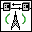
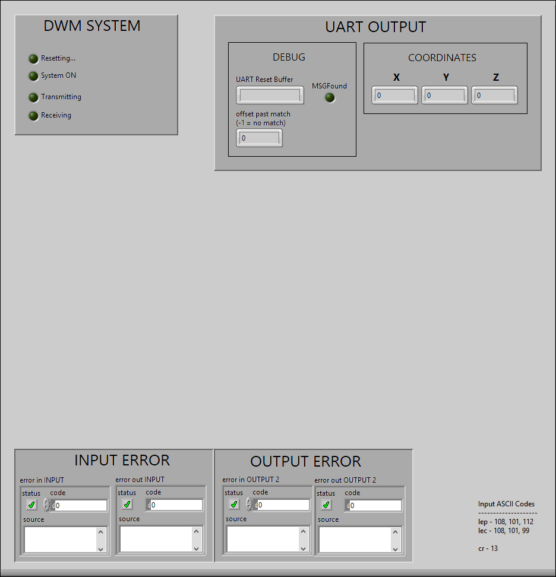
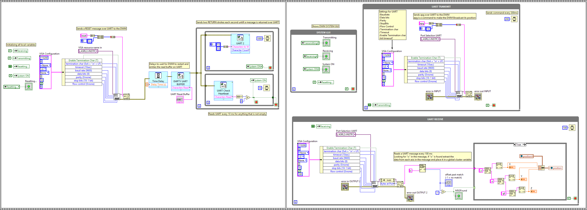

UWBController sends a RESET message to the DWM over UART, then checks for a heartbeat from the DWM. When a heartbeat is found, sends a command for the DWM to broadcast its position. Then reformat the position into a global cluster variable.


